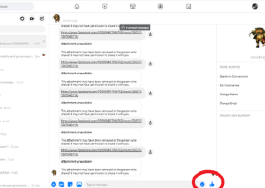

Sidebar View
There are 5 icons beside the Messenger name, these icons stand for:
- Make Messenger full screen
- Create a new room - This is for video calling contacts
- New Message - This will open a new message tab.
- Options/Chat settings where you can adjust preferences on sounds and colours.
Search Messenger
The search bar at the top of Messenger allows you to search conversations that you and a contact are involved in by typing their name, whether it's a one to one converstaion or if you are in any group conversations with them.
Fullscreen View
You may have noticed some icons either side of the text area, from left to right:
-
Plus sign - Pressing this reveals 3 more icons
- Camera - To take and send a picture in the message.
- Game Controler - To challenge yor contact to a game on Facebook.
- Microphone - To send a voice recorded message. Simple press the microphone, press the record button, record your message, press the stop button and it will automatically send.
Fullscreen View cont
- Gif Icon - Used to send images or short animations.
- Sticker Icon - To send stickers to show emotional responses without using words.
- Add File Icon - This will open your computers folders so you can send stored information like photos or bills that are stored on your device.
-  Emoji Icon - Lets you add emojis like smiley faces to text messages.
- Thumbs Up Icon - This will send a quick response of a thumbs up in to the conversation instead of a texted reply.